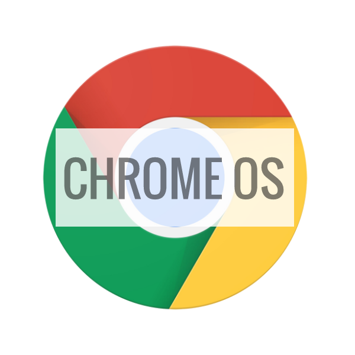

Welcome to KnowYourOS, a website dedicated to give you information about all the OS (Operating System). An Operating system is the software that supports a computer's basic functions, such as managing the computer’s basic functions, establish a user’s interface, deletes and provides applications software.
DESKTOP
-
Windows 10 packs a whole bunch of new features and a new store with brand new apps and games specially designed to work with Windows 10. Microsoft Corporation, the company behind Windows, has been pushing their luck on making Windows 10 the “last windows operating system”. Many people believe this, while others say that there may be a Windows 11 or 12.
PROS:
- Windows 10 works on machines with 1GB of RAM and a 2.0 GHz processor
- Installable on custom hardware
CONS:
- No Virtual Desktop client pre installed
- Requires a restart to install updates (Takes 5 to 60 minutes)

-

OSX is the operating system running on all Mac desktops and laptops. Mac and OSX is made by Apple Inc. OSX and Mac are widely used by businesses and professionals, and is especially popular with creative professionals. OSX was first released in 2001; The latest OSX release, codenamed Sierra, was released in early 2016. While OSX may not get you the best graphics performance, it performs reliably.
PROS:
- OSX is very smooth and responsive on most newer versions.
- App and music store for OSX devices.
- General updates to improve security.
CONS:
- expensive, only one hardware division
- lack of customizability

-

Linux is a operating system kernel first released on September 17, 1991 by Linus Torvalds. Linux is pretty much the only open source operating system, requires no license , is a freely distributable, cross-platform operating system based on almost any electronic. Linux is fantastic for a lot of things, it can be a virtual machine. Linux is the basis of the raspberry PI computer and Deft and Debian are also operating systems of of Linux. Kiol is also made of off Linux and is a very handy OS for hacking. People in 2nd and 3rd world countries and even schools use Linux because it’s easy access. You can share copies of the operating systems with other people legally.
PROS:
- Open Source OS - Basically Free OS to download and use
- Modification - Modify the system freely
- Widely supported - Used all over the world.
- Good for testing code and programs.
CONS:
- Not familiar - Not many people know about Linux
- Overwhelming - Many customization options
- Limited support for third-party and name-brand apps.

-

Imagine a lightweight OS that is geared toward focusing on your web browser, as many computer users primarily use the web and hardly open their offline applications. By stripping most offline applications away, you get Chrome OS. Released by Google in 2009, Chrome OS is meant to be a fast, easy-to-use OS that is heavily reliant on the internet. If you’ve ever used the Chrome Web Browser, it’s practically the same experience with a few offline features. Chrome OS mainly runs on Chromebooks, for the most part low-cost laptops that provide an affordable way to access the web, while being able to handle web browsing and web apps with ease. Chromebooks have become quite popular with students and schools.
PROS:
- lightweight, fast easy to use
- hardware is very inexpensive
CONS:
- totally internet reliant
- doesn’t support much offline programs

MOBILE
-

Android OS was first created by Andy Rubin, and was eventually bought by Google Inc. Since its consumer release in 2009, Android has transitioned from humble beginnings to the beautiful functioning behemoth it is today, as the most popular mobile OS in the world. If you like customization, powerful hardware for a fair price, or variety of choice, then Android is a great choice for your mobile phone. With Google as its owner, most Android devices are much more integrated with Google services than with any other OS. However, because Android devices are made with partnerships with Google and hardware manufactures, updates to the software can be delayed, causing fragmentation.
PROS:
- Open source
- Can run on budget to premium hardware
- customizable interface
- options on hardware (diversity)
CONS:
- fragmented software support
- smaller app store than iOS

-
Released by Apple Inc. in 2007 on the iPhone, iOS is one of the most polished mobile OSs on the market; a result of Apple’s complete control over the hardware and software divisions. iOS runs on Apple’s iPhone, iPad, and iPod Touch lineups, providing users with beautiful software and a wide range of apps. However, iOS products are quite expensive, have a low range of options and hardly any software customization. Although very popular in North America and China, it’s not often found in developing countries. However, if paying a premium price for a premium product is reasonable to you, an iOS device may be the one for you.
PROS:
- refined product
- expansive app selection
CONS:
- expensive, only one hardware division
- lack of customizability